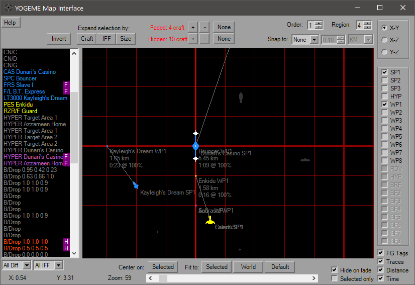
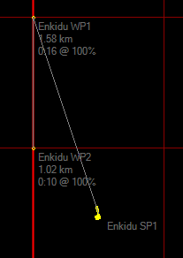

Map Dialog

The Map Dialog is the visual interface of placing FlightGroup Waypoints. From here start locations, flight paths and the briefing locations can be viewed and moved. This is one of the few resizable windows in YOGEME, it can also be maximized for better viewing.
By default, only the first Start Point will be visible when you open the map. Additional waypoints can be set in the Options Dialog as defaults. Icons are color-coded according to their IFF and are not size-relative. On this map an ISD looks the same size as a TIE, so check placements in-game. The initial view will be X-Y top view, the upper right will allow you to view from the "side" and "front" of the mission space. Use the checkboxes on the right-hand side to show/hide additional waypoints. Selecting the BRF waypoint (not available in XWA) will hide all others. The disabled checkboxes will activate according to platform.
To move around the map, right-click and drag. The mouse wheel will zoom the map in and out in addition to the slider. Middle-click will reset the map to default location (0, 0) and zoom (40). Click and drag an icon/WP to move it. The coordinates of your mouse pointer updates as you move over the map.
Hit the "Help" button for more control details, as well as the usage of the filters to show/hide Flightgroups.

The image above shows the Traces ability. This will connect all enabled WPs. Solid lines connect SP1 to the waypoints, and a dashed line connects the last WP used to the HYP point. Unselecting the Tags of Distance checkboxes hide the words near icons and waypoints.